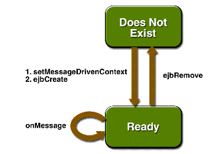

Using the JMS API in a J2EE Application
This section describes the ways in which using the JMS API in a J2EE application differs from using it in a stand-alone client application:
A general rule new in the J2EE 1.4 platform specification applies to all J2EE components that use the JMS API within EJB or web containers:
Any component within an EJB or web container must have no more than one JMS session per JMS connection.
This rule does not apply to application clients.
Using Session and Entity Beans to Produce and to Synchronously Receive Messages
A J2EE application that produces messages or synchronously receives them can use either a session bean or an entity bean to perform these operations. The example in A J2EE Application That Uses the JMS API with a Session Bean uses a stateless session bean to publish messages to a topic.
Because a blocking synchronous receive ties up server resources, it is not a good programming practice to use such a
receivecall in an enterprise bean. Instead, use a timed synchronous receive, or use a message-driven bean to receive messages asynchronously. For details about blocking and timed synchronous receives, see Writing the Client Programs.Using the JMS API in a J2EE application is in many ways similar to using it in a stand-alone client. The main differences are in administered objects, resource management, and transactions.
Administered Objects
The J2EE platform specification recommends that you use
java:comp/env/jmsas the environment subcontext for JNDI lookups of connection factories and destinations. With the Application Server, you usedeploytoolto specify JNDI names that correspond to those in your source code.Instead of looking up a JMS API connection factory or destination each time it is used in a method, it is recommended that you look up these instances once in the enterprise bean's
ejbCreatemethod and cache them for the lifetime of the enterprise bean.Resource Management
The JMS API resources are a JMS API connection and a JMS API session. In general, it is important to release JMS resources when they are no longer being used. Here are some useful practices to follow.
- If you wish to maintain a JMS API resource only for the life span of a business method, it is a good idea to close the resource in a
finallyblock within the method.- If you would like to maintain a JMS API resource for the life span of an enterprise bean instance, it is a good idea to use the component's
ejbCreatemethod to create the resource and to use the component'sejbRemovemethod to close the resource. If you use a stateful session bean or an entity bean and you wish to maintain the JMS API resource in a cached state, you must close the resource in theejbPassivatemethod and set its value tonull, and you must create it again in theejbActivatemethod.Transactions
Instead of using local transactions, you use
deploytoolto specify container-managed transactions for bean methods that perform sends or receives, allowing the EJB container to handle transaction demarcation.You can use bean-managed transactions and the
javax.transaction.UserTransactioninterface's transaction demarcation methods, but you should do so only if your application has special requirements and you are an expert in using transactions. Usually, container-managed transactions produce the most efficient and correct behavior. This tutorial does not provide any examples of bean-managed transactions.Using Message-Driven Beans
As we noted in What Is a Message-Driven Bean? and How Does the JMS API Work with the J2EE Platform?, the J2EE platform supports a special kind of enterprise bean, the message-driven bean, which allows J2EE applications to process JMS messages asynchronously. Session beans and entity beans allow you to send messages and to receive them synchronously but not asynchronously.
A message-driven bean is a message listener that can reliably consume messages from a queue or a durable subscription. The messages can be sent by any J2EE component--from an application client, another enterprise bean, or a web component--or from an application or a system that does not use J2EE technology.
Like a message listener in a stand-alone JMS client, a message-driven bean contains an
onMessagemethod that is called automatically when a message arrives. Like a message listener, a message-driven bean class can implement helper methods invoked by theonMessagemethod to aid in message processing.A message-driven bean, however, differs from a stand-alone client's message listener in the following ways:
The EJB container automatically performs several setup tasks that a stand-alone client has to do:
- Creating a message consumer to receive the messages. Instead of creating a message consumer in your source code, you associate the message-driven bean with a destination and a connection factory at deployment time. If you want to specify a durable subscription or use a message selector, you do this at deployment time also.
- Registering the message listener. You must not call
setMessageListener.- Specifying a message acknowledgment mode. (For details, see Managing Distributed Transactions.)
If JMS is integrated with the application server using a resource adapter, the JMS resource adapter handles these tasks for the EJB container. It creates a connection factory for the message-driven bean to use. When you package an application, you specify properties for the connection factory, such as a durable subscription, a message selector, or an acknowledgment mode. The examples in Chapter 34 show how the JMS resource adapter works in the Application Server.
Your message-driven bean class must implement the following in addition to the
onMessagemethod:
- The
javax.ejb.MessageDrivenBeanand thejavax.jms.MessageListenerinterfaces.- The
ejbCreatemethod, which has the following signature:
public void ejbCreate() {}If your message-driven bean produces messages or does synchronous receives from another destination, you use its
ejbCreatemethod to look up JMS API connection factories and destinations and to create the JMS API connection.- The
ejbRemovemethod, which has the following signature:
public void ejbRemove() {}If you used the message-driven bean's
ejbCreatemethod to create a JMS API connection, you ordinarily use theejbRemovemethod to close the connection.- The
setMessageDrivenContextmethod. AMessageDrivenContextobject provides some additional methods that you can use for transaction management. The method has the following signature:
public void setMessageDrivenContext(MessageDrivenContext
mdc) {}The main difference between a message-driven bean and other enterprise beans is that a message-driven bean has no home or remote interface. Instead, it has only a bean class.
A message-driven bean is similar in some ways to a stateless session bean: Its instances are relatively short-lived and retain no state for a specific client. The instance variables of the message-driven bean instance can contain some state across the handling of client messages--for example, a JMS API connection, an open database connection, or an object reference to an enterprise bean object.
Like a stateless session bean, a message-driven bean can have many interchangeable instances running at the same time. The container can pool these instances to allow streams of messages to be processed concurrently. The container attempts to deliver messages in chronological order when it does not impair the concurrency of message processing, but no guarantees are made as to the exact order in which messages are delivered to the instances of the message-driven bean class. Because concurrency can affect the order in which messages are delivered, you should write your applications to handle messages that arrive out of sequence.
For example, your application could manage conversations by using application-level sequence numbers. An application-level conversation control mechanism with a persistent conversation state could cache later messages until earlier messages have been processed.
Another way to ensure order is to have each message or message group in a conversation require a confirmation message that the sender blocks on receipt of. This forces the responsibility for order back on the sender and more tightly couples senders to the progress of message-driven beans.
To create a new instance of a message-driven bean, the container instantiates the bean and then does the following:
Figure 33-13 shows the life cycle of a message-driven bean.

Figure 33-13 Life Cycle of a Message-Driven Bean
Managing Distributed Transactions
JMS client applications use JMS API local transactions (described in Using JMS API Local Transactions), which allow the grouping of sends and receives within a specific JMS session. J2EE applications commonly use distributed transactions to ensure the integrity of accesses to external resources. For example, distributed transactions allow multiple applications to perform atomic updates on the same database, and they allow a single application to perform atomic updates on multiple databases.
In a J2EE application that uses the JMS API, you can use transactions to combine message sends or receives with database updates and other resource manager operations. You can access resources from multiple application components within a single transaction. For example, a servlet can start a transaction, access multiple databases, invoke an enterprise bean that sends a JMS message, invoke another enterprise bean that modifies an EIS system using the Connector architecture, and finally commit the transaction. Your application cannot, however, both send a JMS message and receive a reply to it within the same transaction; the restriction described in Using JMS API Local Transactions still applies.
Distributed transactions within the EJB container can be either of two kinds:
- Container-managed transactions: The EJB container controls the integrity of your transactions without your having to call
commitorrollback. Container-managed transactions are recommended for J2EE applications that use the JMS API. You can specify appropriate transaction attributes for your enterprise bean methods.Use the
Requiredtransaction attribute to ensure that a method is always part of a transaction. If a transaction is in progress when the method is called, the method will be part of that transaction; if not, a new transaction will be started before the method is called and will be committed when the method returns.- Bean-managed transactions: You can use these in conjunction with the
javax.transaction.UserTransactioninterface, which provides its owncommitandrollbackmethods that you can use to delimit transaction boundaries. Bean-managed transactions are recommended only for those who are experienced in programming transactions.You can use either container-managed transactions or bean-managed transactions with message-driven beans. To ensure that all messages are received and handled within the context of a transaction, use container-managed transactions and specify the
Requiredtransaction attribute for theonMessagemethod. This means that if there is no transaction in progress, a new transaction will be started before the method is called and will be committed when the method returns.When you use container-managed transactions, you can call the following
MessageDrivenContextmethods:If you use bean-managed transactions, the delivery of a message to the
onMessagemethod takes place outside the distributed transaction context. The transaction begins when you call theUserTransaction.beginmethod within theonMessagemethod, and it ends when you callUserTransaction.commitorUserTransaction.rollback. Any call to theConnection.createSessionmethod must take place within the transaction. If you callUserTransaction.rollback, the message is not redelivered, whereas callingsetRollbackOnlyfor container-managed transactions does cause a message to be redelivered.Neither the JMS API specification nor the Enterprise JavaBeans specification (available from
http://java.sun.com/products/ejb/) specifies how to handle calls to JMS API methods outside transaction boundaries. The Enterprise JavaBeans specification does state that the EJB container is responsible for acknowledging a message that is successfully processed by theonMessagemethod of a message-driven bean that uses bean-managed transactions. Using bean-managed transactions allows you to process the message by using more than one transaction or to have some parts of the message processing take place outside a transaction context. In most cases, however, container-managed transactions provide greater reliability and are therefore preferable.When you create a session in an enterprise bean, the container ignores the arguments you specify, because it manages all transactional properties for enterprise beans. It is still a good idea to specify arguments of
trueand0to thecreateSessionmethod to make this situation clear:When you use container-managed transactions, you usually specify the
Requiredtransaction attribute for your enterprise bean's business methods.You do not specify a message acknowledgment mode when you create a message-driven bean that uses container-managed transactions. The container acknowledges the message automatically when it commits the transaction.
If a message-driven bean uses bean-managed transactions, the message receipt cannot be part of the bean-managed transaction, so the container acknowledges the message outside the transaction.
If the
onMessagemethod throws aRuntimeException, the container does not acknowledge processing the message. In that case, the JMS provider will redeliver the unacknowledged message in the future.Using the JMS API with Application Clients and Web Components
An application client in a J2EE application can use the JMS API in much the same way that a stand-alone client program does. It can produce messages, and it can consume messages by using either synchronous receives or message listeners. See Chapter 28 for an example of an application client that produces messages. For examples of using application clients to produce and to consume messages, see A J2EE Application That Uses the JMS API with an Entity Bean and An Application Example That Deploys a Message-Driven Bean on Two J2EE Servers.
The J2EE platform specification does not impose strict constraints on how web components should use the JMS API. In the Application Server, a web component--one that uses either the Java Servlet API or JavaServer Pages (JSP) technology--can send messages and consume them synchronously but cannot consume them asynchronously.
Because a blocking synchronous receive ties up server resources, it is not a good programming practice to use such a
receivecall in a web component. Instead, use a timed synchronous receive. For details about blocking and timed synchronous receives, see Writing the Client Programs.
All of the material in The J2EE(TM) 1.4 Tutorial is copyright-protected and may not be published in other works without express written permission from Sun Microsystems.